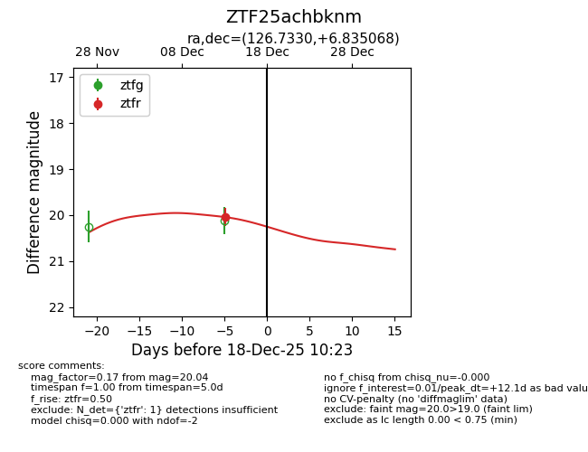
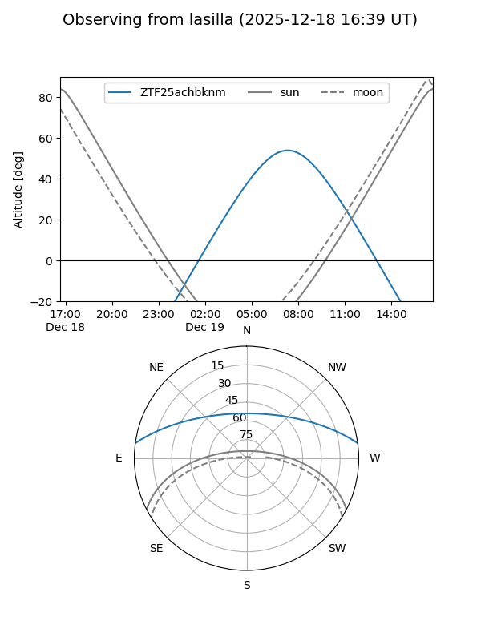
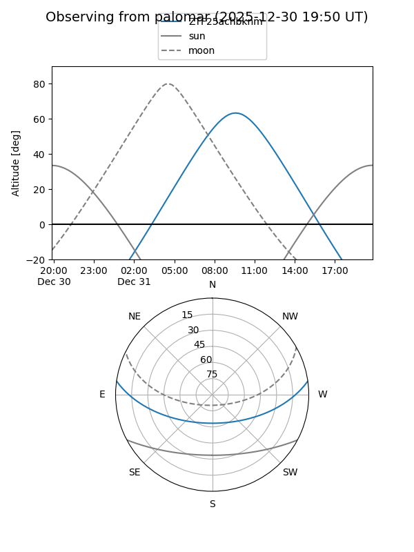

ZTF25achbknm
Target ZTF25achbknm at 2025-12-31 16:59
Aliases and brokers:
FINK:
Lasair:
ALeRCE:
alt names
ZTF25achbknm (ztf,fink_ztf)
Coordinates:
equatorial (ra, dec) = 126.7330,+6.83507
equatorial (HMS+DMS) = 08:26:55.91,+06:50:06.25
galactic (l, b) = (217.7991,+24.32437)
Flags:
Photometry:
last ztfr=20.04
1 ztfr detections
Lightcurve

Visibility


Additional plots